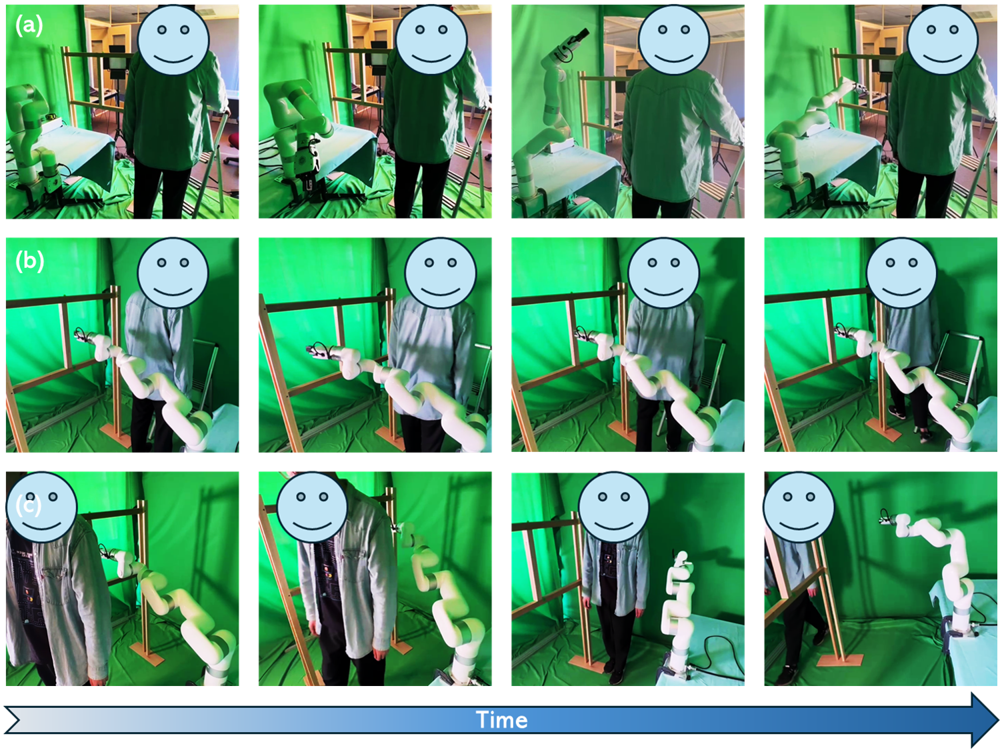
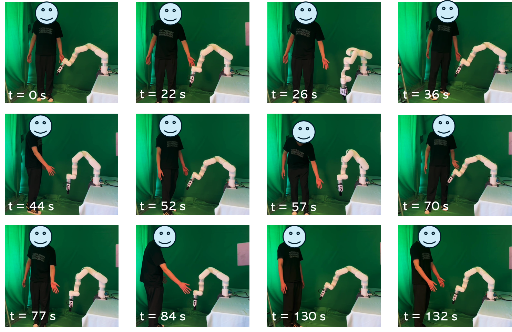

Results of real robot test.

Results of real robot test.

HRC simulation scenario (left) for evaluation. The drill attached to the robotic arm posed a safety threat to the worker. (a) The worker remains stationary within the robot’s work trajectory. When the worker was coming down from the ladder, the Husky unmanned vehicle happened to be nearby, carrying the xArm robot arm to perform screw operations. The worker might move towards the robot without crossing the robot’s work trajectory (b), or move across the trajectory (c).

Results of task (a).

Results of task (b).